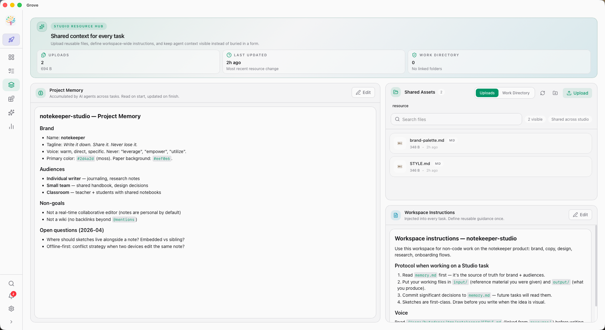

Where humans
and AI agents
build together.
A workspace for you and your AI development team. Run every coding agent in parallel — through chat, sketches, or voice — and ship with confidence. AI development, for everyone — not just coders.

Three ways in.
One workspace.
Grove meets three kinds of people where they are. You don't need to be a developer to contribute. You don't need to leave the terminal to stay in flow. The workspace grows around you.
Runs the fleet, keyboard first.
Lives in the Grove Web IDE — FlexLayout panels, ⌘K palette, Blitz across every project, Shell mode for quick shell-outs. Drops into the TUI when the job calls for it.
Draws the idea. Ships the idea.
Sketches wireframes on Excalidraw, lets the agent read them over MCP, reviews the output inline. IDE Layout means everything is where a designer-developer expects it to be.
Contributes without writing code.
Opens Studio to upload assets, edit project memory, and review artifacts. Drives the AI team by voice from a phone. Never touches git. Still ships.
Every agent, in parallel.
Claude, Codex, Gemini, Copilot, Cursor, Kimi, Qwen — 10 built-in agents, plus anything you plug in via ACP or a custom URL. Each task gets its own Git worktree, its own session, and its own spec. Nothing collides.
- Worktree isolation — each agent on its own branch
- Multi-chat per task with full history replay
- Orchestrator agents can dispatch worker agents via MCP
- Take Control, Observation Mode — multiple clients, one source of truth

For everyone on the team.
Studio is the room where non-coders join the AI workflow. Upload assets. Edit memory. Review artifacts. Draw on Sketch canvases the agents can read. No terminal. No git. Still part of the team.
- Shared Assets file manager with live artifact preview
- Project Memory & Workspace Instructions, visually edited
- Excalidraw sketches the agents can read via MCP
- Inline D2 + Mermaid rendering, image lightbox, markdown preview
TUI. Web. GUI. Mobile. Voice.
One binary, four surfaces. The same workspace lives in your terminal, your browser, your native window, and your phone. Drive it by keyboard, mouse, touch, or by pressing a button and talking.
- IDE Layout — a familiar workspace that non-terminal users can open cold
- FlexLayout — drag panels into the layout that fits your flow
- Radio — hold-to-talk voice control, phone to Chat or Terminal
- Mobile HMAC + QR code — remote access that doesn't leak secrets


Spec to ship, with rigor.
Write a spec. Let the agent do the work. Review line by line. Merge in one step — rebase, merge, archive, cleanup, all handled. Then measure what actually shipped with real AI-work statistics.
- Spec-first: Task Notes + GROVE.md injected into the agent context
- Inline review — threads, @-mentions, AI fixer, bulk resolve
- One-step merge — cross-branch safe, squash-detection built in
- Statistics — AI Work Breakdown, Review Intelligence, Agent Leaderboard
Skills. MCP. Yours.
A marketplace of skills you install in one click — every agent gets smarter at once. A built-in MCP server that exposes Grove to orchestrator agents. Custom agents you plug in by command or URL.
- Skills marketplace — browse, install, scope to project or global
- Grove-as-MCP-server — let orchestrator agents manage tasks and reviews
- Custom agents — any local command, any remote URL
- Hooks — native system notifications when agents finish or need you

One binary.
Four surfaces.
Grove is a single binary with the Web IDE embedded. No runtime deps beyond Git and a terminal multiplexer on Unix.
Shell
curl -sSL https://raw.githubusercontent.com/GarrickZ2/grove/master/install.sh | shHomebrew
brew tap GarrickZ2/grove
brew install grovePowerShell
irm https://raw.githubusercontent.com/GarrickZ2/grove/master/install.ps1 | iexCargo
cargo install grove-rs
# with desktop GUI:
cargo install grove-rs --features guiDownload a release
macOS .dmg, Windows .exe, Linux .tar.gz / .AppImage. Latest release ↗
Start grove
cd your-project
groveGrove grows one branch at a time.
Built in Rust. Shipped with care. MIT licensed. Works with every coding agent we know of, and the one you're about to build.